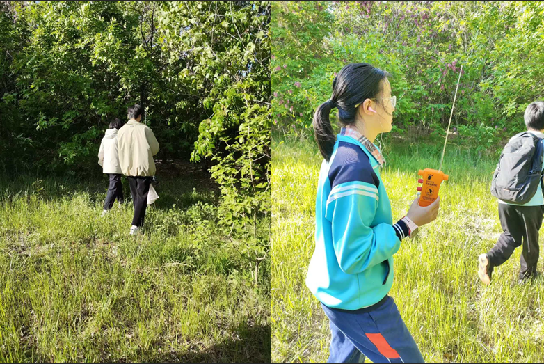
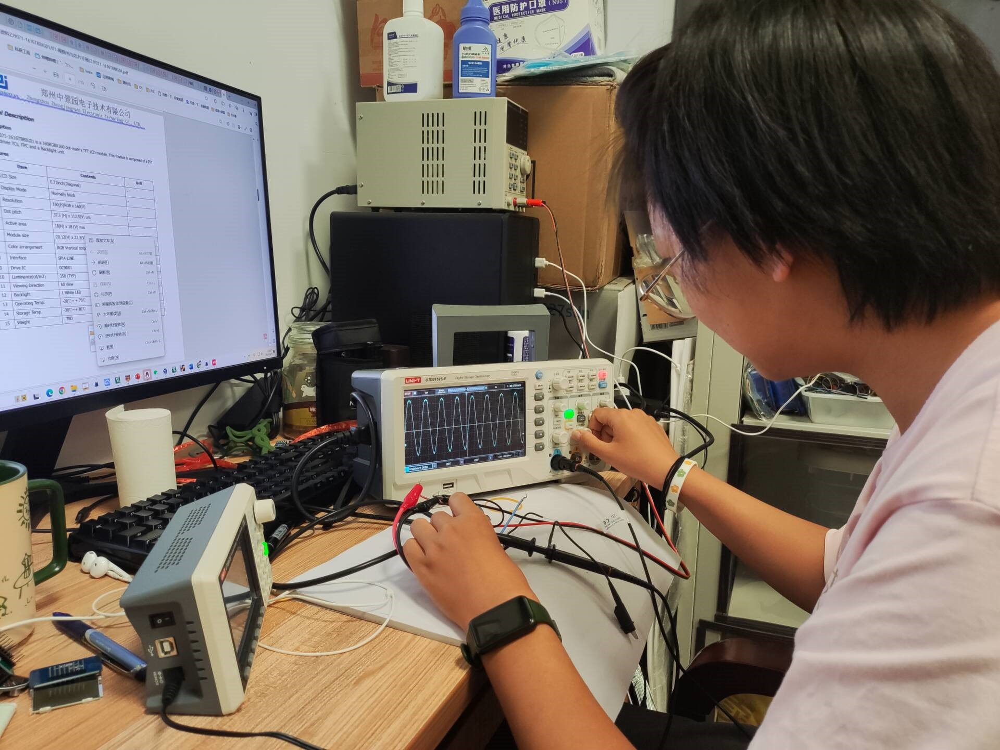
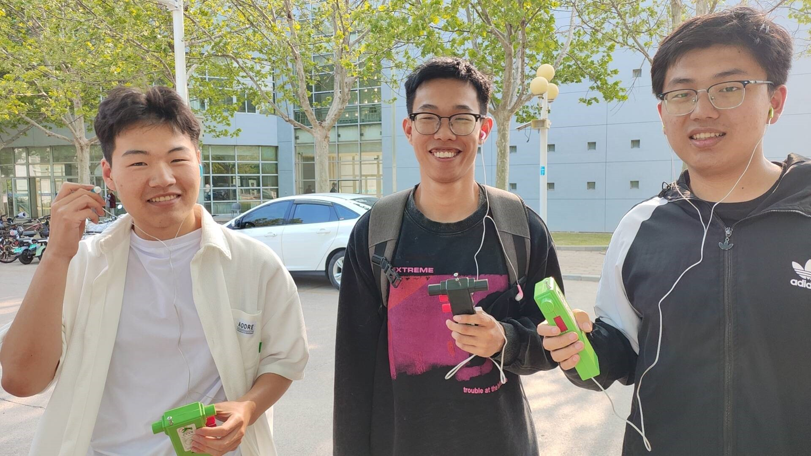
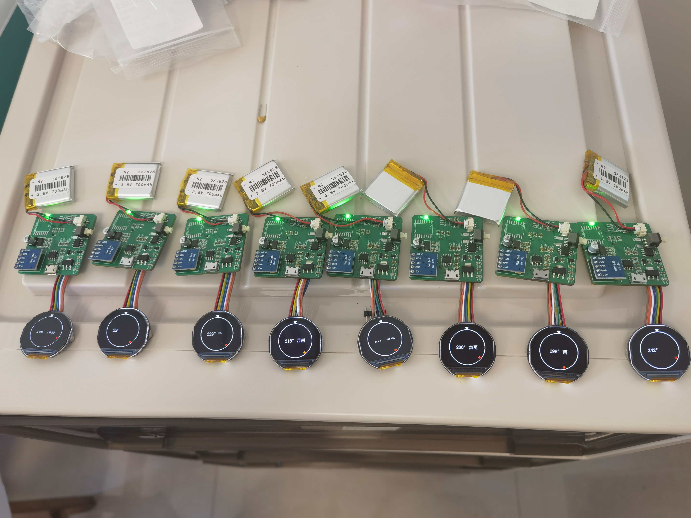
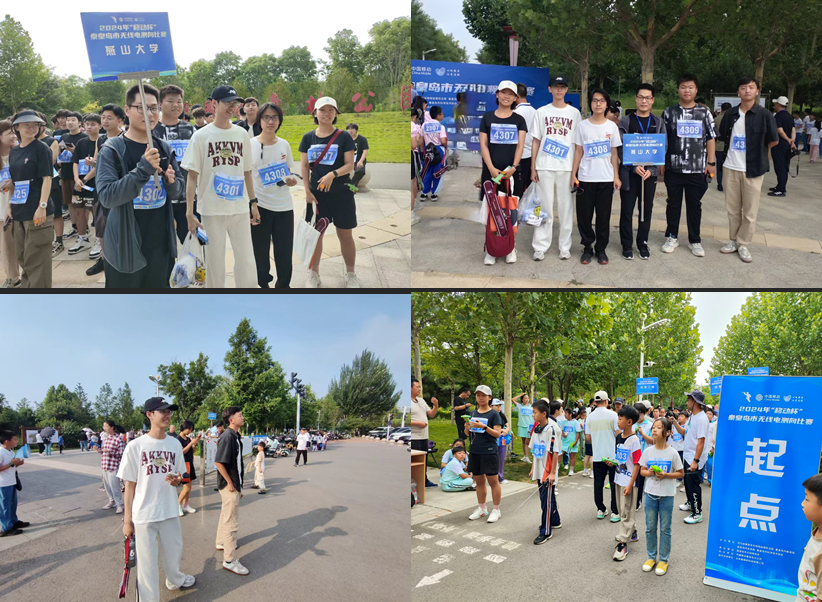
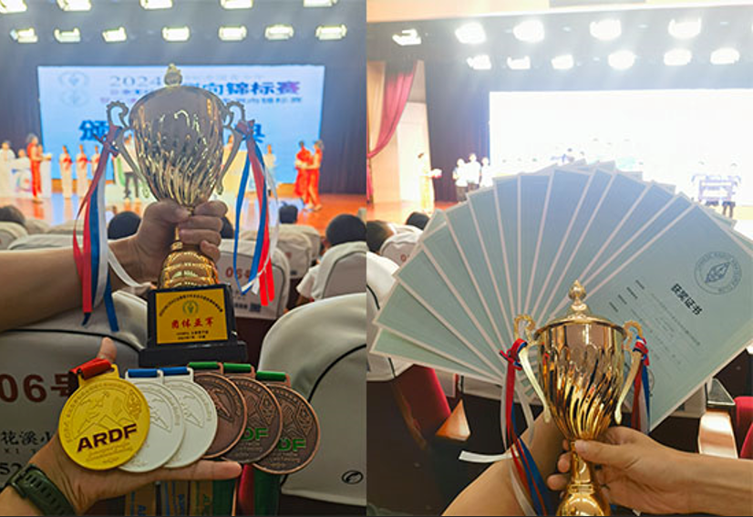

大事记
燕山大学无线电测向协会——燕之波，成立于2024年6月。自成立以来，协会得到了学校团委和老师的大力支持，同时也获得了兄弟协会的热心帮助。虽然成立时间不长，但协会在短短几个月内已经展现出巨大的活力和潜力。燕之波最初以无线电测向活动为核心。随着协会的发展，活动范围逐渐拓展至更广泛的技术领域，如80米信号源制作、电子指南针的设计与制作、PLC技术应用以及循迹小车的研发等。这些项目不仅丰富了成员们的技术储备，还极大提升了成员的动手能力和创新思维。年轻的燕之波凭借着协会成员的热情与实力，逐步在校园内崭露头角，成为推动技术创新与交流的新兴力量，展现出蓬勃的发展前景。
2024年05月11日进行试验性测向活动
容伟洪、徐千壹、王浩，协会的三位创始人，于2024年5月11日，率先在燕山大学塔山公园进行了试验性质的测向活动。本次活动主要是熟悉无线电信号在户外环境的传播特性。5月13日，三位同学又在燕山大学信息科学与工程学院附近进行测向活动。本次活动是为了熟悉高大障碍物对无线电信号的影响。这两次活动为无线电测向活动在校园的展开积累了宝贵经验。
自制80米波段信号源
2024年5月12日，协会决定自制80米波段信号源，组建了技术小组，并邀请王云老师进行技术指导。初期目标是复刻哈尔滨工业大学业余无线电俱乐部开源的80米波段信号源。同时，协会购置了示波器、信号发生器、稳压电源等实验设备，为信号源的制作与调试提供实验条件。
自制80米波段测向机
2024年5月13日，协会决定自制80米波段测向机。第一阶段的目标是基于商家开源的原理图进行复现。掌握相关技术原理后，再对电路设计进行优化，以提高测向机的灵敏度。目前，复现工作已初步完成，接下来将对电路板进行迭代优化，通过调整电路布局、改进信号放大和滤波设计，力求在各种环境下提供稳定高效的测向能力。这一过程需要大量的测试和调试，以确保最终设计能够满足实际应用需求。

协会首次组织了无线电测向活动
2024年5月18日，在学校领导和老师的大力支持下，协会组织了首次大规模的80米无线电测向活动。此次活动在燕山大学的塔山公园举行，吸引了众多大学生和小学生参与，使无线电测向运动在校园内引起了广泛关注。通过这次活动，参与者不仅对无线电测向有了初步认识，也感受到了这项运动的趣味性和挑战性，激发了更多学生对无线电测向的兴趣，推动了这一技术在校园的进一步传播。
协会购置第一台3D打印机
2024年6月9日，协会购置第一台3D打印机。通过3D打印，协会可以快速制作产品原型，加速项目验证，减少外部制作的时间和成本。打印机还将帮助成员进行个性化设计，满足特殊需求，提升创意灵活性。此外，3D打印能够降低小批量生产的费用，非常适合制作复杂零件，同时也提供了学习和提升机械设计、建模技能的机会。

协会制作第一个电子指南针
2024年6月23日，协会决定制作一款电子指南针，作为送给新生的开学礼物。该项目涉及电子电路设计、PCB制板、51单片机开发、软件开发和3D打印等技术，为协会成员提供了宝贵的实践机会。最终，第一版电子指南针于8月30日成功完成，后续我们将对初代电子指南针进行升级优化,加入更多功能模块。

协会参加秦皇岛无线电测向比赛
2024年6月29日，燕之波协会成员首次以燕山大学代表队的身份，参加了秦皇岛市无线电测向比赛。比赛项目包括摩尔斯码听抄、80米测向和2米测向等多个项目。参赛的代表队成员在赛场上奋力拼搏，展现了过硬的技术水平和顽强的斗志。经过激烈的角逐，代表队取得了优异的成绩，为燕山大学赢得了荣誉。这次比赛不仅提高了协会成员的实践能力，也增强了团队凝聚力，为今后参与大型无线电测向比赛积累了经验。

协会参加全国青少年业余无线电测向锦标赛
2024年7月25日至30日，全国青少年业余无线电测向锦标赛在天津市举行。燕之波协会派出王浩、容伟洪、徐千壹三名成员组成燕山大学代表队参赛。最终，代表队斩获男子144MHz团体接力银牌，男子个人全能金银牌，男子3.5MHz个人铜牌，女子快速测向个人铜牌，女子144MHz个人银牌。这些骄人的成绩不仅展示了同学们的实力，更为学校争得了荣誉。

协会计划制作无线电打卡系统
2024年8月9日，燕之波协会决定与秦皇岛市无线电协会合作，共同研制业余无线电测向比赛中使用的计时打卡器和成绩统计系统。协会负责研制工作，秦皇岛市无线电协会负责为初代产品测试提供便利。项目主要分成硬件和软件两个方面， 在硬件方面，首先需要逆向推导现有打卡计时器的电路图，并制作PCB板。针对打卡和计时功能，我们计划使用STM32单片机进行开发。在软件方面，我们计划使用Java、HTML、JS等编程语言开发成绩统计系统。首先，我们将复现现有系统的功能模块，确保基础功能的正常实现。接着，我们会针对当前系统存在的数据安全性较差、操作复杂等问题进行优化。当前该项目正在紧张进行中。

欢迎加入燕之波社团！我们需要你！
只要你喜欢无线电,嵌入式开发,3D打印,焊接技术等等,不论你是的新手，还是已经拥有一定经验的爱好者，这里都有你的一席之地。
- 实践机会：亲自动手制作无线电设备，电路板焊接，从基础电路到复杂系统。
- 技术培训：同学们可以和"导师们"一对一交流培训。
- 竞赛挑战：参与全国无线电测向锦标赛，各类计算机跟软件竞赛,与顶尖选手一决高下。
- 团队合作：与来自不同背景的成员一起工作，共同解决问题。
如果你对以下内容感兴趣,或者具有很强的技术能力,那就赶快来加入我们吧！
点击下载Excel文件| 需求 | 焊接技术 | 3D打印 | 软件开发 | 嵌入式学习 | 测向运动 |
|---|---|---|---|---|---|
| 1 | 协会需要能够焊接电路板的同学。即使没有经验也没关系，我们会提供指导。首先从简单的焊接操作入手，先练习直插式元器件的焊接技术，接着学习贴片元器件的焊接。在此过程中，同学们需要掌握电烙铁、加热焊台和热风枪等工具的使用，还要学会处理复杂电路板的焊接技巧。这些操作都由经验丰富的学长学姐进行指导。当具备一定的焊接能力后，同学们将负责焊接一些电路板，例如信号源、测向机和计时打卡系统的电路板。 | solidwork使用，掌握草图建模方式：这是3D打印的灵魂所在，只有掌握了草图建模你才能随心所欲的实现自己的想法。 | 掌握基本前端开发语言HTML、CSS、Js、Jquery：前端开发的地基，无论多么 高层次的前端技术都是通过地基搭建而来，重要性不言而喻 | 51单片机的学习：51单片机是学习嵌入式的入门必走的第一步，是很重要的一步基础。我们协会的电子指南针就是使用51单片机实现的。 | 我们需要对无线电测向活动感兴趣的同学加入，并希望同学们能够经常参与和组织测向活动。每次活动前，需做好宣传工作，吸引更多学生参与。定期举办这些活动的一个主要目的是选拔优秀队员，组建校队，参加明年的秦皇岛市无线电测向比赛。更重要的是，明年的全国青少年业余无线电测向锦标赛计划在秦皇岛举行，校队也要参加这一国家级赛事。 |
| 2 | 3D打印机的使用：学会使用3D打印机不仅仅是只会把模型运行打印，更重要的是在打印的过程中去解决可能发生的问题。 | 掌握后端开发语言C、JAVA：后端开发的地基，无论多么高层次的后端技术都是通过地基搭建而来，重要性不言而喻 | STM32的学习：STM32是ARM架构的单片机，能够实现的功能比51单片机多很多，可以满足嵌入式开发的大部分需求。我们后续要做的改进版指南针、无线电测向运动使用的信号源、无线电测向比赛的打卡器等等都需要使用STM32或者其他ARM架构的芯片 | ||
| 3 | 切片软件的使用和参数调节：切片软件是决定模型成品好坏的关键，这需要积累很多的打印经验形成一套属于你的"成功学" | 掌握SQL语言和常用数据库的使用：数据库就是数据的载体，是软件开发不能缺少的部分，合理的设计数据库关乎软件的性能、可维护性、扩展性以及用户体验 | |||
| 4 | 为各种项目建模服务：我们学习的目标是为了更好地解决实际问题，项目是检验我们技能和水平的最好方式 | 掌握后端开发技术框架Spring、SpringMVC、SpringBoot、SpringCloud：这些都是目前JAVA开发的主流技术框架，使用它们能够使我们更关注业务逻辑的实现，而不必过多关注底层的基础设施和配置细节。 |